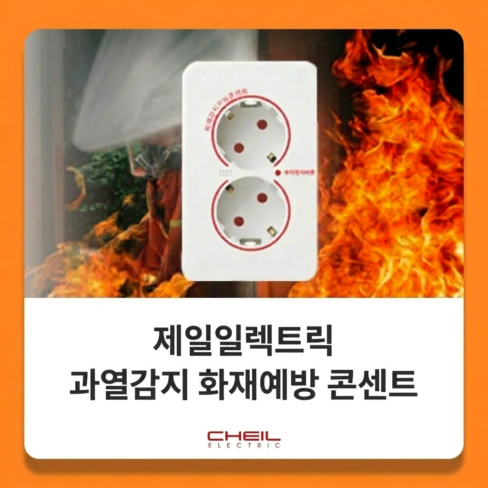
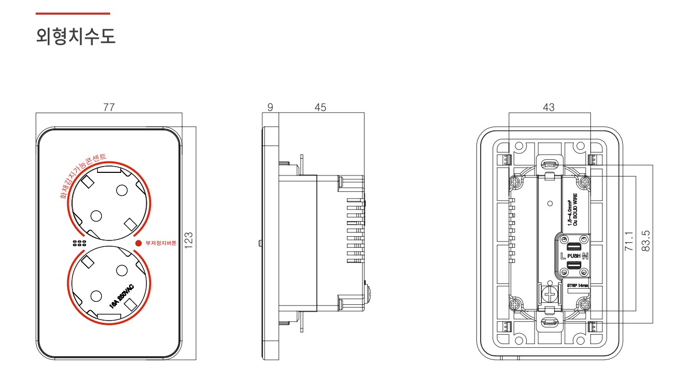
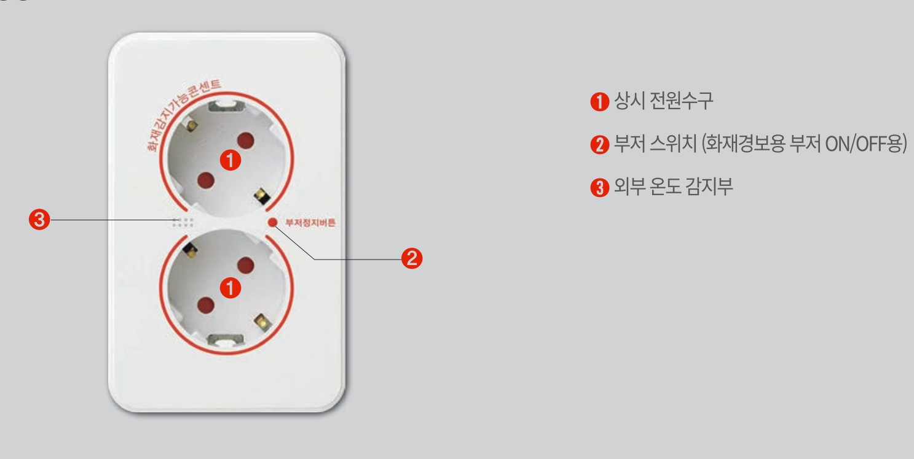
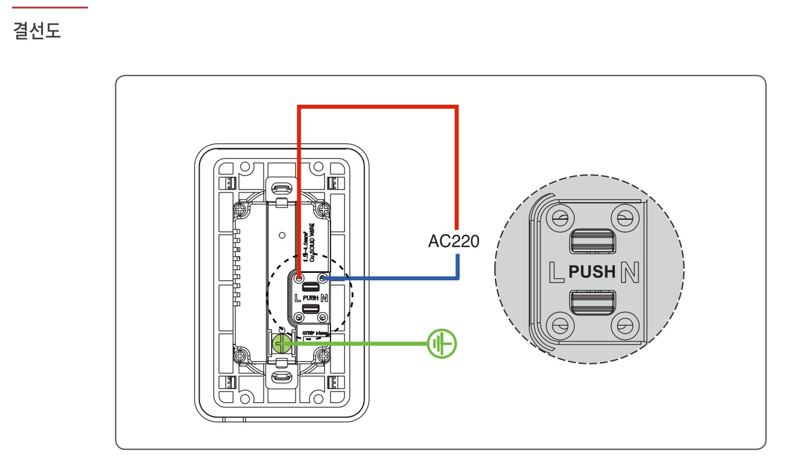

⚡
노후된 전기설비
전선 피복 손상, 배선 노후, 과부하 누적은 합선과 단락으로 이어질 수 있습니다. 오래된 설비는 “괜찮겠지”가 아니라 “먼저 확인해야 하는 대상”입니다.
콘센트 내·외부 온도를 스스로 감지하여 과열로 인한 화재 위험 발생 시 경보음으로 알려주는 화재예방 콘센트입니다.
에어컨·제습기 등 냉방기기와 난방기기 사용량이 급증하는 겨울과 여름철에는 콘센트와 배선에 걸리는 부하도 함께 커집니다. 소방청 화재통계 기준 전기화재는 전체 화재의 약 23%를 차지하며, 여름철에는 그 비중이 30% 이상으로 높아집니다. 즉, 콘센트 주변의 작은 이상 신호를 먼저 감지하는 것이 중요합니다.
전선 피복 손상, 배선 노후, 과부하 누적은 합선과 단락으로 이어질 수 있습니다. 오래된 설비는 “괜찮겠지”가 아니라 “먼저 확인해야 하는 대상”입니다.
에어컨, 제습기, 선풍기를 동시에 사용하는 시기에는 전선과 콘센트 주변 과열 위험도 함께 커집니다.
플러그 결합이 느슨하거나 먼지가 쌓이면 열이 발생할 수 있습니다. 작은 접촉 문제 하나가 큰 화재로 번질 수 있는 구간입니다.
이 제품의 핵심은 콘센트의 내·외부 온도를 스스로 감지하여 과열 및 화재 위험 시 경보음으로 먼저 알려주는 점입니다. 단순한 콘센트가 아니라, 전기화재 위험을 조기 인지하도록 돕는 스마트 안전 장치입니다.

콘센트 내·외부 온도를 24시간 정확하게 측정하는 고정밀 센서가 탑재되어 과열을 빠르게 감지합니다.
내·외부 온도가 60℃에 도달하면 즉각적인 경보음이 발생하여 주변 사용자가 위험을 즉시 인지할 수 있습니다.
온도가 40℃ 이하로 안전하게 떨어지거나 위험 제거 후 약 3분이 경과하면 스스로 경보를 해제하여 관리가 편리합니다.
일반 콘센트와 완벽하게 동일한 규격으로 설계되어, 추가 타공이나 배선 공사 없이 기존 자리에 바로 교체 설치할 수 있습니다.
제품 동작 흐름은 단순하고 실용적입니다. 위험을 감지하고, 경보를 울리고, 위험 제거 후 정상 상태로 복귀합니다. 복잡한 기술은 뒤에 숨기고, 중요한 건 현장에서 바로 이해되는 직관적인 흐름입니다.
부저 스위치 ON 상태에서 콘센트가 정상적으로 대기합니다.
내·외부 온도 60℃ 도달 시 과열 및 화재 위험을 감지합니다.
경보음으로 위험 상황을 즉시 알리고, 필요 시 스위치로 임시 해제가 가능합니다.
위험 요소 제거 후 약 3분 또는 40℃ 이하에서 경보가 멈추고 정상 상태로 돌아갑니다.
제품 도입을 검토할 때는 “좋아 보이는가”보다 “설치 가능한가, 이해하기 쉬운가, 현장에 맞는가”가 더 중요합니다. 아래 이미지로 제품 외형과 구성 정보를 확인하실 수 있습니다.

설치 전 공간 및 마감 조건을 검토할 수 있도록 외형 치수를 확인할 수 있습니다.

감지부, 부저, 스위치 등 주요 구성 요소를 이해하기 쉽게 확인할 수 있습니다.

배선 연결 방식 검토에 도움이 되는 결선 정보를 확인할 수 있습니다.
화재 감지 및 복합 제어와 관련된 특허 진행 사항으로 제품의 신뢰성을 증명합니다.
화재 감지 가능한 온도 감응형 전류 공급기
화재 감응형 복합 제어 전류 공급기
콘센트 적용이 가능한 화재 감지 장치
전동기구에 적용 가능한 화재 감지 장치
화재 위험은 공간마다 다르게 나타납니다. 전력 부하가 큰 산업 현장부터 대피가 어려운 다중이용시설, 배선이 노후된 주거 공간까지 — 같은 콘센트라도 필요한 이유는 각기 다릅니다. 설치 방식은 어디든 같습니다.
전력 사용량이 많고 분진이나 인화성 물질이 많은 공장, 물류창고, 서버실 등에 필수적입니다. 과부하 및 트래킹 현상으로 인한 대형 화재를 초기에 예방합니다.
화재 발생 시 신속한 대피가 어려운 요양병원, 산후조리원, 그리고 전력 설비가 밀집된 전통시장이나 대형 상가의 전기 화재 예방에 탁월한 효과를 발휘합니다.
스마트 홈 구축 시 핵심 안전 솔루션으로 활용되며, 배선이 낡은 노후 주택이나 1인 가구, 캠핑장 등 일상생활 속 보이지 않는 위험으로부터 안전망을 구축합니다.
✓ 일반 콘센트와 동일 규격 — 교체만으로 화재 감지 시스템 완성
별도의 배선 공사 없이 기존 콘센트와 그대로 교체할 수 있습니다. 화재 감지 설비가 없는 사각지대라도, 전원만 연결하면 즉각적인 화재 예방 시스템이 구축됩니다.
일반 콘센트와 같은 규격이라 교체 공사는 어렵지 않습니다. 다만 화재 예방 장치는 감지부가 가려지지 않게 설치하는 것이 핵심이므로, 아래 두 가지만 확인하시면 됩니다.
설치 방식은 어디든 같지만, 걸리는 지점은 현장마다 다릅니다. 실제 상담에서 자주 나온 질문을 분야별로 정리했습니다.